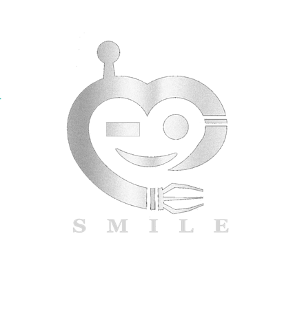

AI-OMS
File
Real-Time Mode
Case information
Patient ID:
Age:
Sex:
Surgery:
Date:
-
-
Summary report
Duration:
h
m
s
Surgeon:
Generate report
Initial video
Instrument segment
Tissue segment
Desmoke
Phase recognition
Creation
Position
Separation
Inspection
Idle
Segmentation annotation
Color:
Instrument:
Bipolar
Color:
Instrument:
Ultrasonic knife
Segmentation annotation
Color:
Anatomy:
Facial vein
MIRACLE module
Smoky Surgical Field
Desmoke Surgical Field
📄 Report preview
×
Connecting...